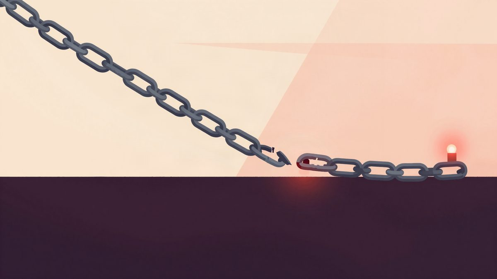
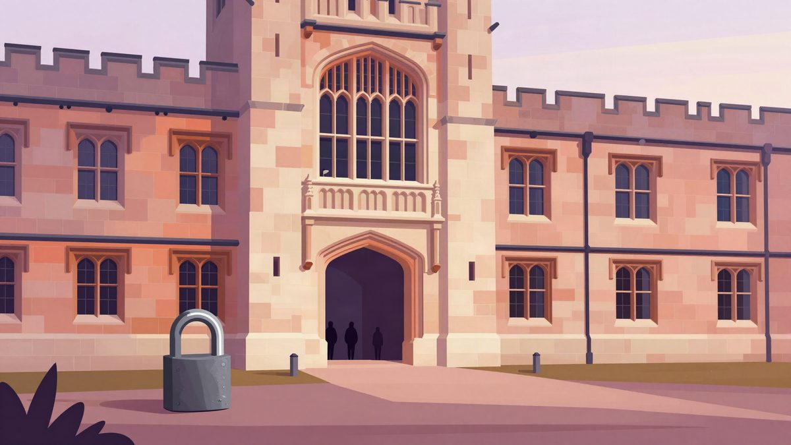

Stari Bitly linkovi iz tweetova Burger Kinga, McDonald'sa i Donalda Trumpa preusmjeravaju na tuđi sadržaj

Napadači su preuzeli stare, neaktivne Bitly poveznice u tweetovima Burger Kinga, McDonald'sa i Donalda Trumpa te ih preusmjerili na nepovezan sadržaj. Bitly je suspendirao uključene račune i onemogućio zahvaćene poveznice, a Burger King i McDonald's obrisali su zahvaćene objave.
Stari skraćeni linkovi servisa Bitly, objavljeni u tweetovima Burger Kinga, McDonald'sa i Donalda Trumpa, vodili su na sadržaj koji nema veze s izvornim objavama. Problem se pojavio 15. studenoga 2026. Bitly je potvrdio da su napadači preusmjerili određene stare, neaktivne linkove, suspendirao uključene račune i onemogućio zahvaćene linkove.
Burger King je 24. srpnja 2011. na tadašnjem Twitteru objavio tweet s linkom bit.ly/19BFiM, kojim je promovirao servis za pretraživanje restorana. Bitlyjeva stranica s informacijama o linku pokazivala je da je link kreiran 15. studenoga 2026. u 5:32 UTC, a odredište je bio Wikipedijin popis nacističkih koncentracijskih logora. Na to je upozorio korisnik platforme X, a tweet je tu promjenu prikazivao čak i u pregledu poveznice.
McDonald'sov tweet iz 7. lipnja 2011. imao je isti problem. Njegov Bitly link preusmjeren je na Wikipedijin članak o napadima 11. rujna.
Zahvaćeni su i drugi tweetovi
Sigurnosni portal Ransomnews provjerio je 97 Bitly linkova iz tweetova Donalda Trumpa između 2009. i 2013. Među njima su bili zlonamjerni linkovi, linkovi koje je Bitly blokirao kao spam, domene kripto servisa i Wikipedijin članak o Jeffreyju Epsteinu. CNN piše da su bili zahvaćeni i tweetovi Billa Gatesa te bivšeg kanadskog premijera Justina Trudeaua.
Bitlyjeva pomoćna stranica navodi da se završetak bit.ly linka ne može ponovno upotrijebiti, čak ni nakon brisanja računa koji ga je kreirao. U veljači 2025. ipak je prijavljeno da je ispravljen bug koji je to omogućavao. Zato se pretpostavlja da je netko iskoristio sličnu ranjivost kako bi izmijenio linkove.
Bitly je 16. studenoga objavio da je problem identificirao i suspendirao uključene račune. Njihov tim za povjerenje i sigurnost, kažu, radi na rješavanju problema i jačanju zaštite od sličnih zlouporaba. Link iz Burger Kingova tweeta sada prikazuje poruku da je nevažeći. Burger King i McDonald's obrisali su zahvaćene objave.
Prijetnja nije samo u tweetovima
Ransomnews upozorava da je ovaj put uglavnom bila šala, jer su linkovi vodili na Wikipedijine članke te stranice igara na Steamu i videa. U sličnom slučaju iz 2025. linkovi su vodili na domene povezane s meme coinovima i kripto servisima, pa se isti postupak može iskoristiti za prijevare.
Šteta nije ograničena na X. Takvi skraćeni linkovi još postoje u starim e-mailovima, PDF datotekama, prezentacijama, tiskanim QR kodovima i pomoćnim stranicama. Kad nestane ono na što je link pokazivao, netko drugi ga može preuzeti. Sigurnosni istraživači ovu vrstu napada nazivaju link rot hijackingom.
Nije rečeno jesu li zahvaćeni i korisnici u Europi.
Izvor: Gigazine
Povezani članci
 Privatni Reddit profil navodno ne skriva stare objave od Googlea12. studenoga 2026.
Privatni Reddit profil navodno ne skriva stare objave od Googlea12. studenoga 2026.- Grok Build objavljuje aplikacije bez zaštite: istraživači su pronašli osjetljive podatke SpaceXSI-ja, X-a i Tesle12. studenoga 2026.

Hakeri ukrali lozinke svih korisnika portala myTUM na Tehničkom sveučilištu u Münchenu9. studenoga 2026.